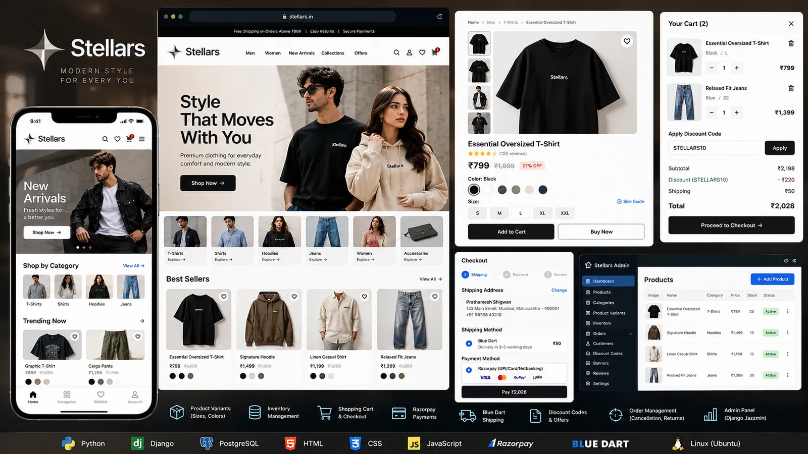
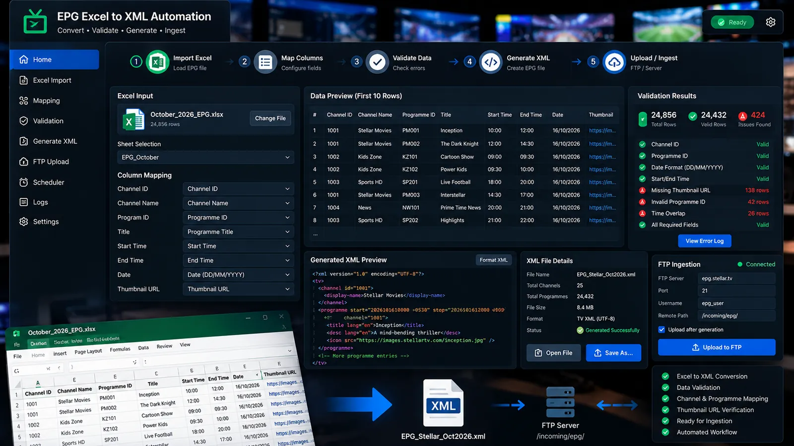
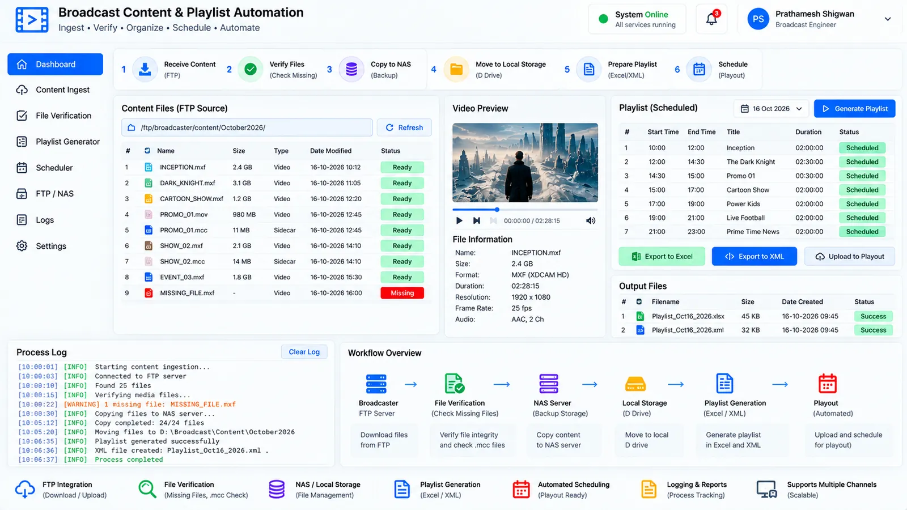
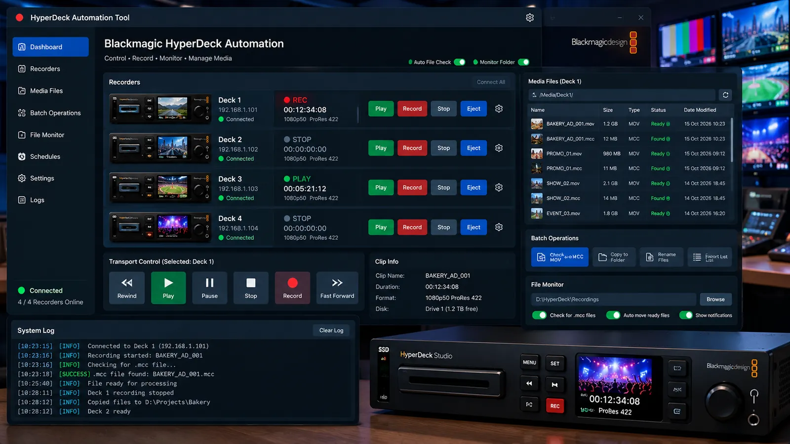
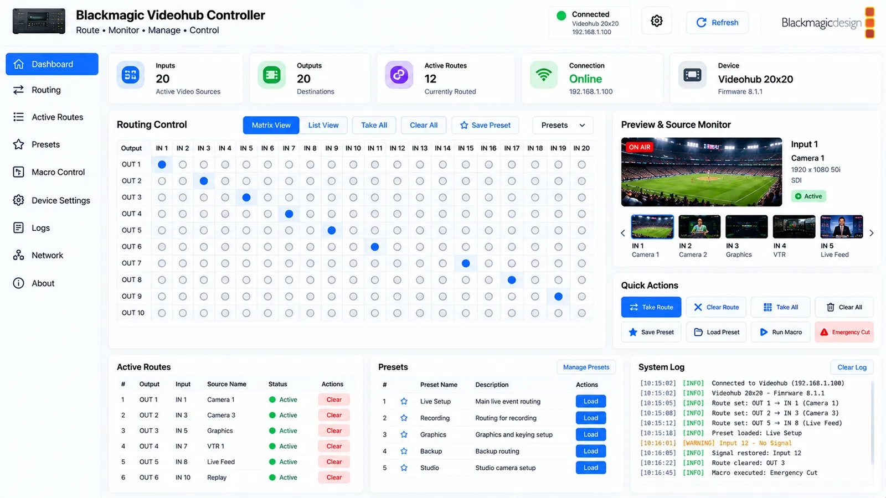
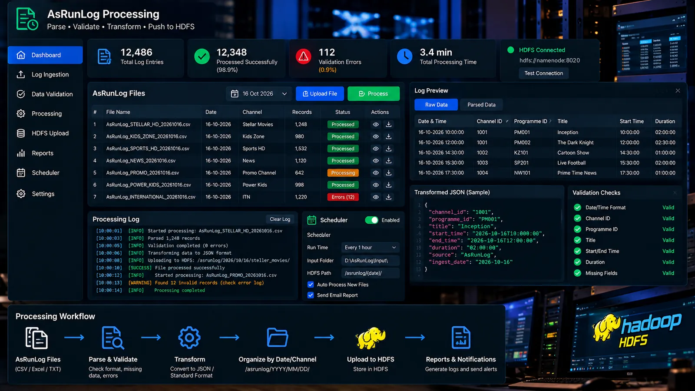
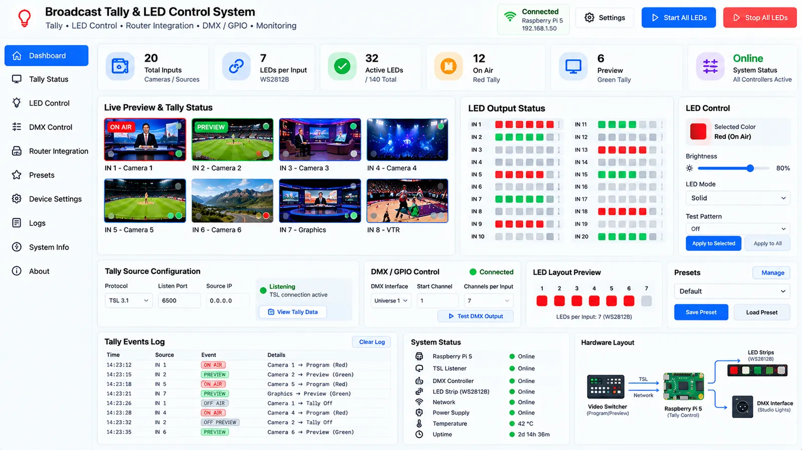
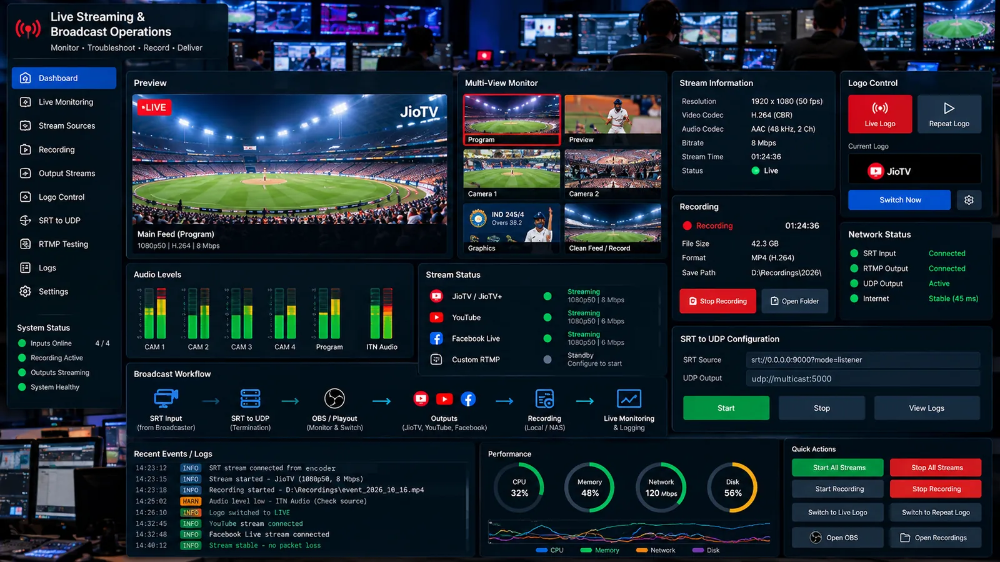

Projects
Software I’ve built and systems I’ve worked on, from a Django e-commerce platform to Python automation and broadcast engineering.
Filter projects
-

Illustration, not a screenshotDjango E-commerce Platform
A Django e-commerce application covering the whole order lifecycle: product variants, inventory, cart and Razorpay checkout, through to Blue Dart shipping, returns and replacements.
- Python
- Django
- SQL
- HTML
- CSS
- and 5 more
-

Illustration, not a screenshotEPG Excel-to-XML Automation
Python automation that turns broadcaster programme schedules from Excel into structured XML, with ID, date, time and thumbnail checks, ready for FTP ingestion.
- Python
- Excel
- XML
- File processing
-

Illustration, not a screenshotBroadcast Content and Playlist Automation
Content preparation and media-management workflows for broadcast playout: FTP transfers, NAS and local storage, missing-file and readiness checks, and playlist preparation.
- Python
- FTP
- Excel
- NAS
- File-system automation
-

Illustration, not a screenshotBlackmagic HyperDeck Automation Tool
A Python desktop tool for Blackmagic HyperDeck recorders that pairs recorder-control workflows with media-file readiness checks.
- Python
- Tkinter
- Networking
- Telnet
- Blackmagic HyperDeck
-

Illustration, not a screenshotBlackmagic Videohub Controller
A Python desktop application for controlling Blackmagic Videohub routing equipment over the network.
- Python
- Tkinter
- CustomTkinter
- Sockets
- Telnet
- and 1 more
-

Illustration, not a screenshotAsRunLog Processing
Processing broadcast transmission (as-run) logs into structured data for downstream systems, with workflow support for HDFS ingestion.
- Python
- Log processing
- HDFS
-

Illustration, not a screenshotBroadcast Tally and LED Control System
A tally indication system that brings broadcast control signals to WS2812B addressable LEDs, combining TSL protocol work with Arduino, FastLED and Raspberry Pi.
- Python
- TSL
- FastLED
- WS2812B
- Arduino
- and 1 more
-

Illustration, not a screenshotLive Streaming and Broadcast Operations
Hands-on operational experience supporting live broadcast and streaming workflows: event monitoring and recording, feed troubleshooting, SRT, UDP and RTMP.
- UDP
- SRT
- RTMP
- OBS
- Networking
- and 1 more
No projects in this category yet.
Have a Project in Mind?
Tell me what you want to build or automate. Let’s discuss a practical solution for your business.